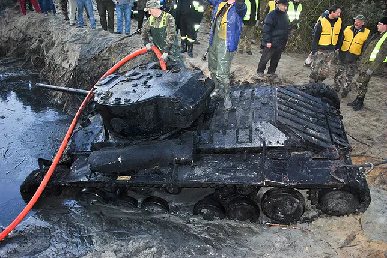
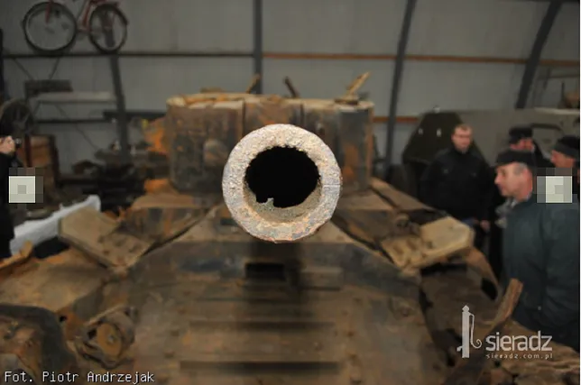
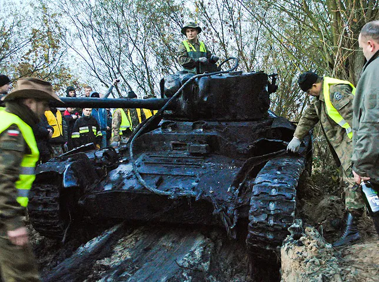

Czołg dziesiątki lat przeleżał pod polską ziemią
O tym odkryciu mówił cały świat. W Polsce wydobyto idealnie zachowany czołg z czasów wojny
To odkrycie to było jednym z bardziej spektakularnych wydarzeń eksploracyjnych ostatnich lat. Zaowocowało wydobyciem unikalnego w skali światowej czołgu "Valentine". Zdaje się, że to jedyny na świecie okaz, który wciąż jest "na chodzie". Ten najliczniej produkowany brytyjski czołg piechoty z okresu II wojny światowej był znany z małego kosztu produkcji i niezawodności.
Los tak chciał, że podczas wojny jeden z nich zatonął na skutek pęknięć pokrywy lodowej rzeki Warty. W jej starorzeczu, głęboko pod warstwą błota i mułu, przeleżał dziesiątki lat w beztlenowym środowisku. Dopiero niedawno udało się go wyciągnąć, po czym został zakonserwowany. Uwadze nie może umknąć fakt, że przez lata uszkodzeniu nie uległa ani jedna część, nawet silnik, z wyjątkiem jednej śruby. Oto kultowy czołg "Valentine", odnaleziony na polskich ziemiach.




Ostatnia aktualizacja: 17.11.2019